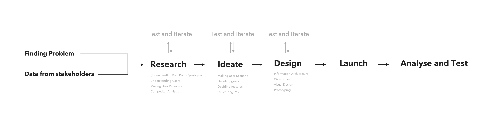
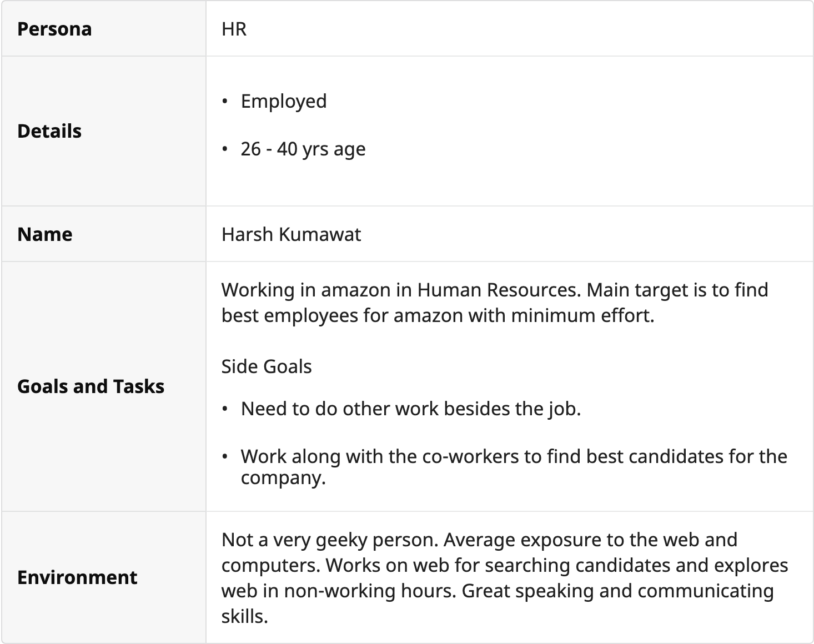
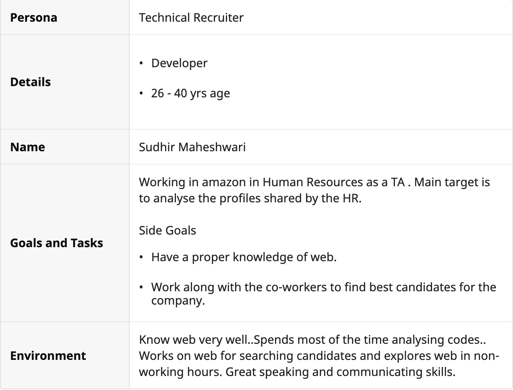
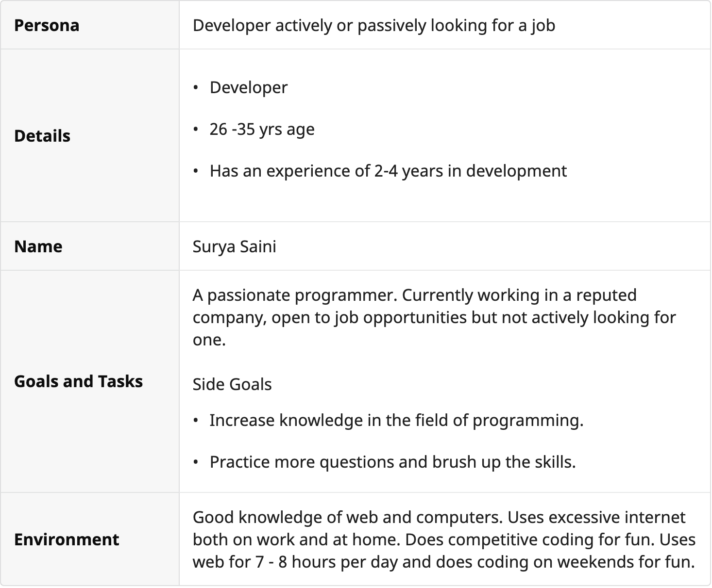
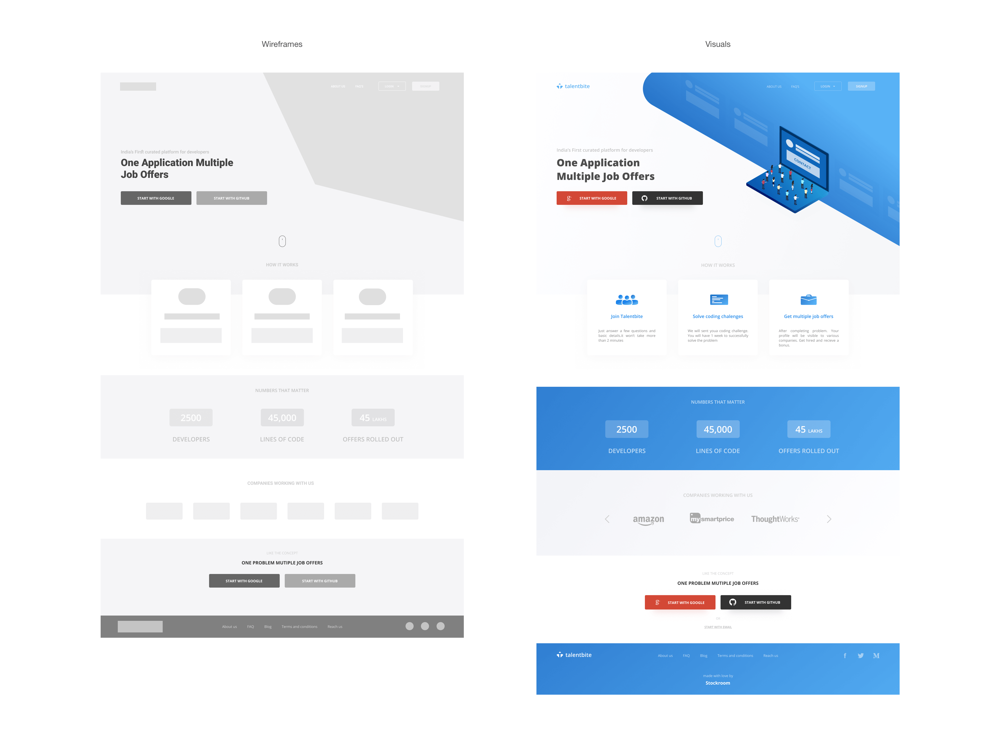
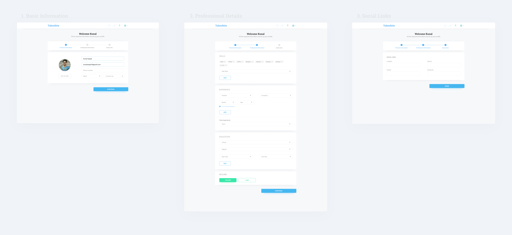
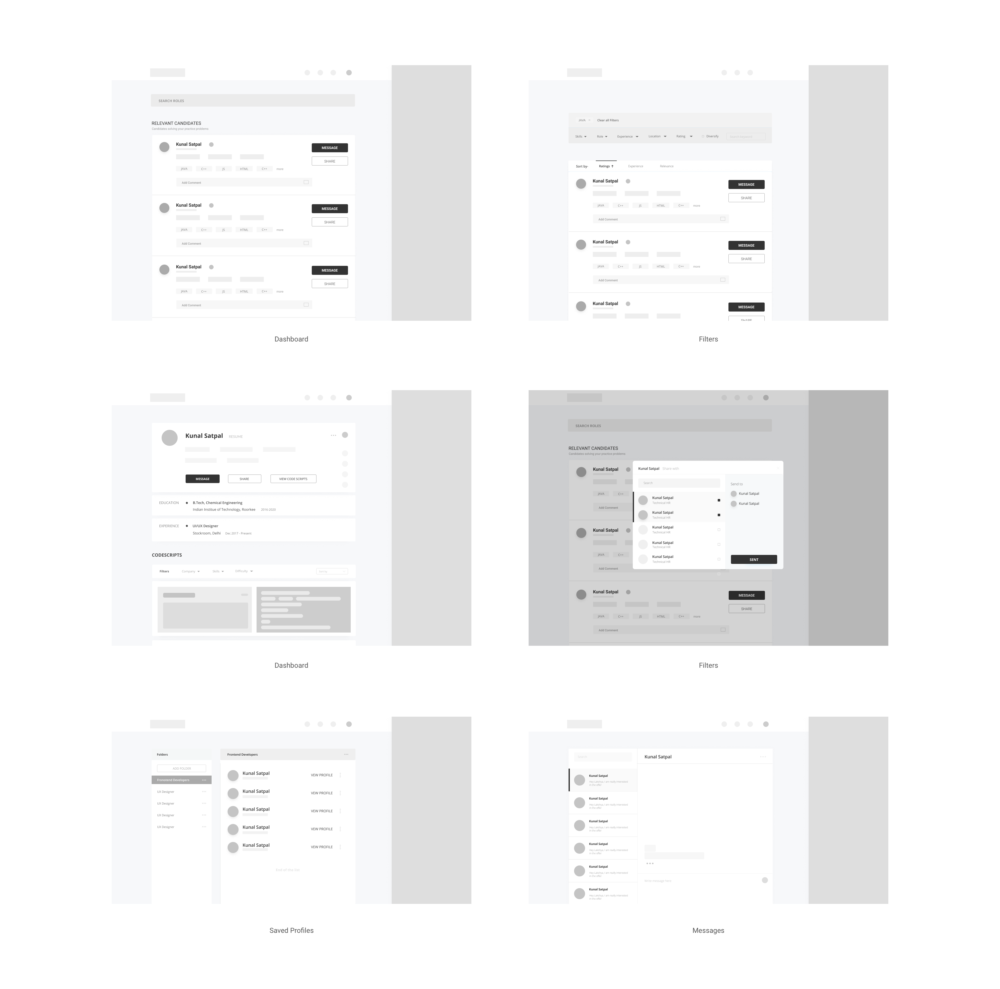
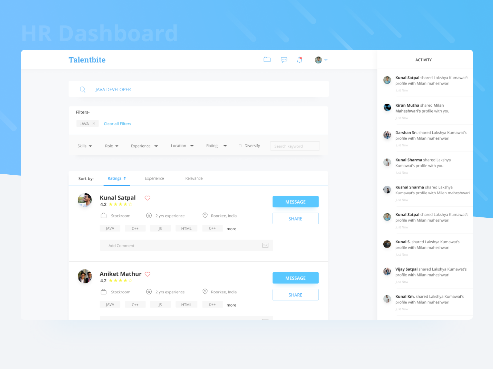
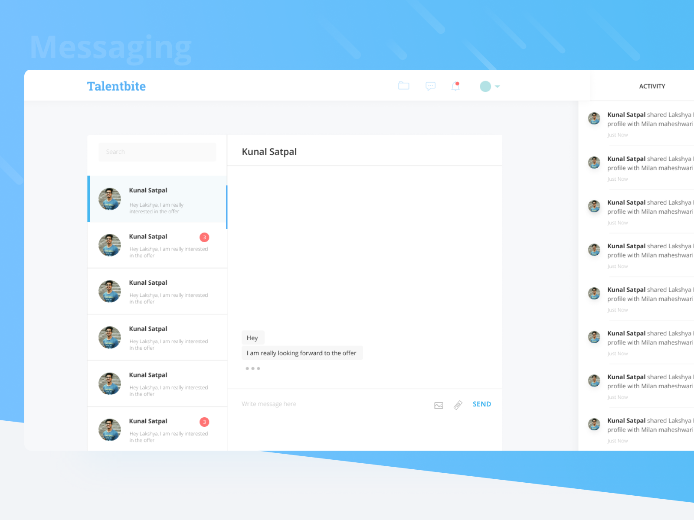
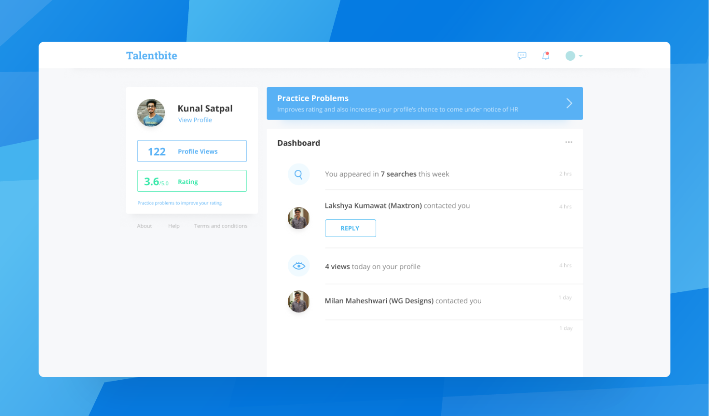

It all started with a call from Nipun Goyal (Co-founder Curofy) who was working on a new idea. He wanted me to build the pilot run app. I found the idea intersting and the people working on it Brilliant and experienced. This made me say yes.
Few months after He called me and asked to work as an Full-time member of the start up. I didn't knew if I was ready for it and how I would manage this along side my college, but there was no way I could have said NO to it.
This platform will provide all essential information which is needed while recruitment procedure to the companies, But the USP of Talentbite is that it will also provide data of previous hackathons the candidate participated in with the exact problem statement and codescript the candidate attempted. Which will help the technical HR to properly judge the skills of the candidate.
I was assigned the responsibility to complete the landing page and two panels i.e. the company(HR) and developer panel. Where I was required to work from scratch starting from research to making mockups. I was required to work in the Delhi office with Naren(CEO).
I decided to work on Figma, Figma provides all essentials features from sketch and also is a great application for collaborative working. It took me just a day to get familiar with the whole interface it is quite similar to that of XD and sketch.
We followed Lean UX with an Agile mindset to promote collaborative work and reduce wastes, utilize resources properly moreover regular discussions, proper collaboration and iterations help in getting better results in less time. Testing at every stage of the process makes sure that the project never goes out of track.

After completely understanding the product and how it fits into the process, started with the research part. Naren and Soumya Ranjan Bishi (my mentor) were very much familiar with the market and users so they helped me with it due to time constraint. For building persona's and to understand user minset in a better way I took interviews of HR working at MANCER Utd.



There are many competitors in the market but there is none providing much similar features
Some companies targeting same users are:
Hackerearth has the same moto i.e. providing curated talent to the companies and they do this by organising hackathons for different companies. But there methodology of doing so is very much different from talentbite.
It focuses on the same problem but approaches it in a very different way. Where candidates search for a job profile and apply according to that.
Focused on learning rather than finding jobs.
Making a user signup to your platform is the most important and difficult task to do and for this to happen an appropriate landing page is very essential. The design should guide the user to the and also provide all the required information to make a decision. To increase conversions stats (like companies associated, testimonial etc.) to win a users trust is very much important. Making the landing page visually appealing is also very essential. Knowing the fact that a good UI helps in increasing conversions I tried to design it with the latest UI trends.

Designing a signup form is always a challenging task, People on stockroo.io were directly signed up on Talentbite via email. Other new users were required to provide their details to signup.

Most of the research and work was required in this panel. Starting with the research, I took a couple of days to completely understand how the HR and whole hiring procedure is carried out by different technical recruiters and HR.
For better understanding, more research was done on all the features required and which will help the user to achieve their goals. Knowing the functionality of any function and what is its importance in the flow also helps in wireframing process. MVP only contains primary features and other features are added in further versions. My job was to design a full-fledged product, not an MVP so I designed including all features decided

Searching and filtering profiles according to the need is the most prominent feature of talentbite, HR always need to search for new candidates who fits best for the profile.
To ensure this, a wide autocomplete search bar is used.
Now the question arises what to search for? There could be many things a HR could search: any skill, job role, location etc. After having a small questionnaire with the recruiters in Mancer, and a bit online research I came to a conclusion that most of the time HR knows what kind of vacancy they have and can search job role according to that.
Later after searching he/she can also add other filters and sort the search results.

For an HR the most important thing is to connect with the candidate, so this feature is very essential for the product to work. Now what kind of messaging should be there chat box or new window?
Both of them are good and there is no harm in using small chat box with a full page messaging. Chat box allows users to chat while they are searching for another candidate or doing some other work on talentbite.
To maintain the professionalism only attachments and images can be sent in the chat no emojis are there.

Candidate dashboard consists of a major notification or updates page. Views on profile and rating is an extrinsic motivation hence given proper position in visual hierarchy. User can practice questions to increase their ratings and to get noticed more by the recruiters.

It was an incredible experience for me at stockroom.io. This internship helped me a lot with my flow making and UX skills. I also learned a lot about landing pages and tried isometric illustrations. This journey not only gave me a lovely experience, learnings but also a bunch of happy smiles in my life